Python IDE for beginners
Installer with 64-bit Python 3.10, requires 64-bit Windows 8.1 / 10 / 11
thonny-4.1.7.exe (21 MB)
Installer with 32-bit Python 3.8, suitable for all Windows versions since 7
thonny-py38-4.1.7.exe (20 MB)
Portable variant with 64-bit Python 3.10
thonny-4.1.7-windows-portable.zip (31 MB)
Portable variant with 32-bit Python 3.8
thonny-py38-4.1.7-windows-portable.zip (29 MB)
Re-using an existing Python installation (for advanced users)
pip install thonny
Installer with Python 3.10 (universal2)
thonny-4.1.7.pkg (42 MB)
Re-using an existing Python installation (for advanced users)
pip install thonny
Downloading and launching the installer with Homebrew
brew install thonny
Installer (installs private Python 3.10 on x86_64, uses existing python3 elsewhere)
bash <(wget -O - https://thonny.org/installer-for-linux)
Re-using an existing Python installation (for advanced users)
pip3 install thonny
Flatpakflatpak install org.thonny.Thonny
Snapsudo snap install thonny
Debian, Raspbian, Ubuntu, Mint and others
sudo apt install thonny
Fedorasudo dnf install thonny
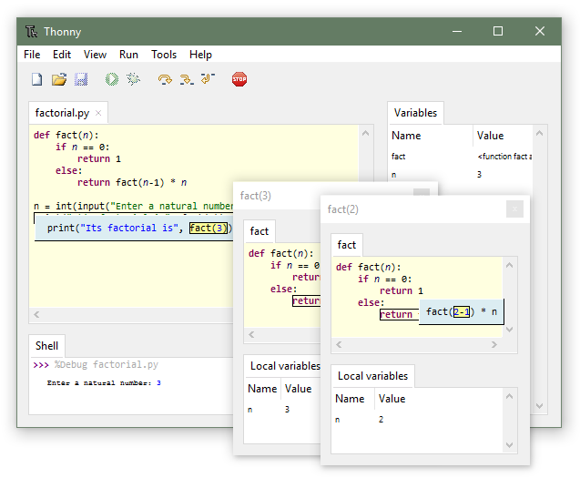
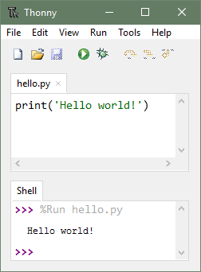
Thonny comes with Python 3.10 built in, so just one simple installer is needed and you're ready to learn programming. (You can also use a separate Python installation, if necessary.) The initial user interface is stripped of all features that may distract beginners.
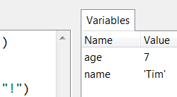
Once you're done with hello-worlds, select View → Variables and see how your programs and shell commands affect Python variables.
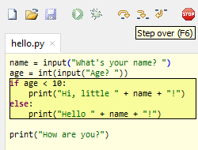
Just press Ctrl+F5 instead of F5 and you can run your programs step-by-step, no breakpoints needed. Press F6 for a big step and F7 for a small step. Steps follow program structure, not just code lines.
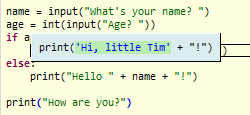
If you use small steps, then you can even see how Python evaluates your expressions. You can think of this light-blue box as a piece of paper where Python replaces subexpressions with their values, piece-by-piece.
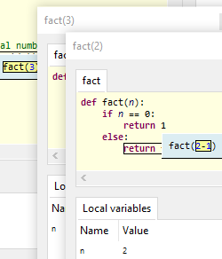
Stepping into a function call opens a new window with separate local variables table and code pointer. Good understanding of how function calls work is especially important for understanding recursion.
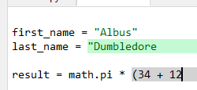
Unclosed quotes and parentheses are the most common beginners' syntax errors. Thonny's editor makes these easy to spot.
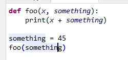
Highlighting variable occurrences reminds you that the same name doesn't always mean the same variable and helps spotting typos. Local variables are visually distinguished from globals.
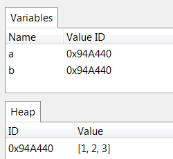
Variables are initially presented according to simplified model (name → value) but you can switch to more realistic model (name → address/id → value).
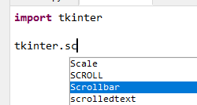
Students can explore APIs with the help of code completion.
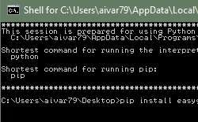
Select Tools → Open system shell to install extra packages or learn handling Python on command line. PATH and conflicts with other Python interpreters are taken care of by Thonny.
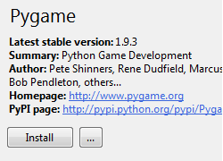
Select Tools → Manage packages for even easier installation of 3rd party packages.
Thonny's main author is Aivar Annamaa. All design decisions and opinions are his own and may not reflect the views of the supporters listed below.
From 2014 to 2018 the main development of Thonny took place in Institute of Computer Science of University of Tartu, Estonia.
Since September 2018 development of Thonny is partially supported by Cybernetica AS.
Development of several features in Thonny 3.0 and 3.3 was proposed and supported by Raspberry Pi Foundation.
Latest stable releases are linked in the download box above. Older releases and prereleases can be found at github.com/thonny/thonny/releases.
Thonny has simple infrastructure for extensions. These are some known Thonny plug-ins: